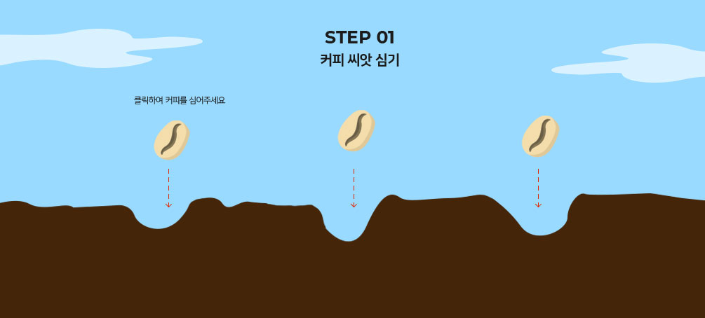

Coffee is a brewed drink prepared from roasted coffee beans, the seeds of berries\ from certain Coffea species. When coffee berries turn from green to bright red in color – indicating ripeness – they are picked, processed, and dried.
더 알아보기 >
커피, 트렌드를 입다 ‘긱 시크(Geek Chic)’라는 단어를 들어본 적이 있는가? 긱 시크는 ‘괴짜’라는 의미의 ‘긱(Geek)’과 ‘세련된’이라는 의미의 ‘시크(Chic)’의 합성어로 일반적으로 독특한 괴짜 패션을 의미한다. 긱 시크라는 단어를 떠올렸을...
read more커피, 트렌드를 입다 ‘긱 시크(Geek Chic)’라는 단어를 들어본 적이 있는가? 긱 시크는 ‘괴짜’라는 의미의 ‘긱(Geek)’과 ‘세련된’이라는 의미의 ‘시크(Chic)’의 합성어로 일반적으로 독특한 괴짜 패션을 의미한다. 긱 시크라는 단어를 떠올렸을...
read more